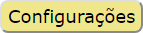
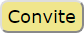

indicam pontuações e a disponibilidade do bônus de sprint para ambos os jogadores.
indicam pontuações e a disponibilidade do bônus de sprint para ambos os jogadores.
 indica os créditos do jogador ativo.
indica os créditos do jogador ativo.
Aqui estão algumas breves explicações para jogar movimentos:
indicam pontuações e a disponibilidade do bônus de sprint para ambos os jogadores.
indica os créditos do jogador ativo.
 permite que você selecione o modo de jogo, idioma, etc.
Aqui são os modos de jogo:
Modos com IA ainda não estão implementados.

mostra ou esconde a interface do TogetherJS
que permite que você convide um amigo remoto para jogar BALTEK.
A interface TogetherJS
permite que dois jogadores remotos sincronizem seus navegadores da web
e também conversem.
A interface TogetherJS
fornece ajuda em inglês. Clique no avatar.
Sincronize os dois navegadores da web antes de iniciar um novo jogo.
Ambos os jogadores devem aplicar por si mesmos a regra de alternância para turnos, porque o navegador da Web do jogador passivo nunca é bloqueado.
TogetherJS
Alcançar-se as regras através do botão Regras
.
BALTEK é jogado no browser, e é relativamente portátil. No entanto, a ergonomia atual requer uma tela bastante grande e um rato.
A adaptação do BALTEK para o smartphone está prevista em outra fase.